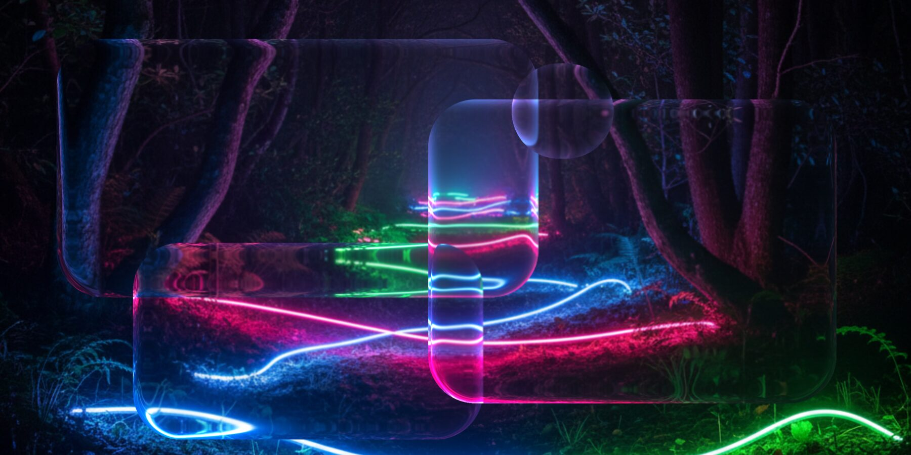

顶栏。
浮在内容之上。
三种形态：全宽、浮动胶囊、完全透明。智能隐藏时，只在窗口压过来时才让位。

玻璃不是装饰。
它在 KWin 合成器里折射你窗口后面的光。
新功能
外观
NextKDE 自带一个 KWin 玻璃效果：折射、边缘光、连续圆角，以及按区域分别控制的模糊。设置里的三个预设和两个强度滑块，都在下面这一组里。

材质
三种预设与两个滑块，就是设置里「液态玻璃」一页的全部。
这两项与设置里的滑块一致。Material 外观只走模糊，不开启折射。
实时采样。拖动滑块，看这层玻璃的厚度变化。
三种形态：全宽、浮动胶囊、完全透明。智能隐藏时，只在窗口压过来时才让位。
悬停放大 100–300%，窗口缩略图带关闭按钮，底、左、右三向停靠；还能与顶栏合成一条。
Wi-Fi、蓝牙、亮度、声音、勿扰、夜灯、截图、常亮与电源，都在同一块玻璃面板里。
从壁纸取色的 Monet 调色板，以及中国传统色与日本传统色两套本地生成方案。
桌面
时钟、天气、日历、待办、系统、活动、音乐，每种三档尺寸，拖动重排，右键改大小。桌面文件也能像文件夹一样整理。
花形模拟表盘，附带可开始、暂停、续跑的倒计时。
日程与农历同屏；待办来自同一个 PIM 服务，改一处同步两边。
CPU、内存、存储环，CPU 频率与运行时长热力图。
重命名、复制、移到回收站、选择打开方式，按名称 / 类型 / 修改时间排列；文件夹还能改颜色和 emoji。
应用
日历、计算器、待办与天气是独立的 Qt Quick 应用，独立进程、独立窗口，由 kosctl install apps 一起安装。KMusic 通过设置里的应用商店安装；ListenFree 是需要显式选择的播放器。
日 / 周 / 月 / 年四视图，Ctrl+N 新建、Ctrl+1–4 切换、Ctrl+F 搜索，支持 iCalendar 导入导出。
基础 / 科学 / 换算三种模式，13 类单位，100 条可回溯历史，键盘直接输入。汇率是带日期的离线快照。
收件箱、今天、计划、日历、已完成五个视图，优先级、截止时间、重复与提醒。
随天气变化的动态天空，可搜索并保存多个城市；当前、逐小时与七天预报，空气质量、风向与月相。断网时保留最后一次完整预报并标明已过期。

细节
七个全局快捷键。Meta+Space 启动器、Meta+Shift+Space 快速搜索、Meta+B 控制中心、Meta+Tab 总览、Meta+V 剪贴板。全部可改。
通知中心。横幅内联回复、按应用分组、50 条会话历史、按应用屏蔽与勿扰。
锁屏与登录。iPadOS 风格的玻璃时钟锁屏，带天气、月历与歌词；另有配套的 SDDM 登录主题。
壁纸转场。15 种转场、5 套内置主题、幻灯片与颜色模式。接管 Plasma 壁纸，随时可以还原。
统一窗口外观。KWin 原生裁剪的连续圆角、贴边阴影、居中标题栏，以及可单独配置的三点按钮面板。
图标外观。彩色、灰度或统一着色，不透明度可调；应用图标与托盘图标一起生效。
电源模式。节能、平衡、性能三档，直接读系统 power-profiles-daemon，无电池也能用。
降低动态。设置里可关闭减少动态与减少透明度：动效时长归零，玻璃退成不透明底色。
中英双语。跟随系统语言，设置里也能手动切换，即时生效，无需重启。
发行版配方会随源码一起维护，但不等于每个发行版都通过了端到端验收。实际验收环境与结果写在发布说明里。
git clone --depth 1 https://github.com/NextKde/NextKde.git
cd NextKde
./tools/kosctl update &&
./tools/kosctl doctor &&
./tools/kosctl install &&
./tools/kosctl start应用单独安装：./tools/kosctl install apps。KWin 效果需要注销或重启后加载。
更新免费，源码开放，GPLv3。按发行版准备依赖，再跟随指南安装。
NextKDE 0.1.1 · KDE Plasma 6 / Wayland · GPLv3